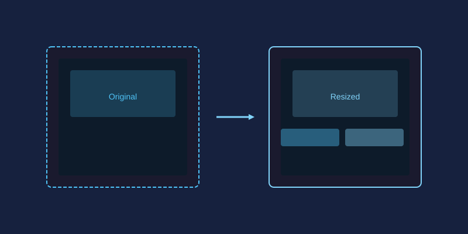
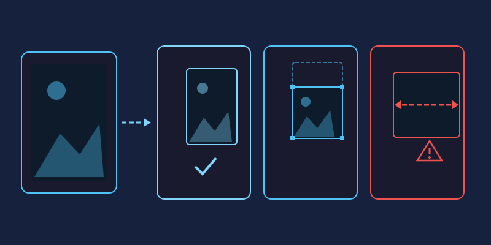
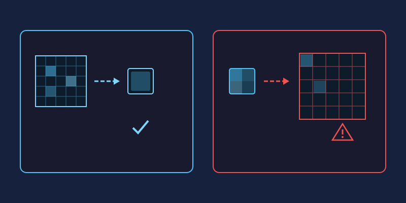

Resizing sounds simple—type in new numbers, click OK. But if you've ever ended up with a blurry, pixelated mess, you know there's more to it. This guide explains what actually happens when you resize an image and how to get clean results every time.
Resolution vs. DPI: Two Different Things
Resolution is the pixel count of your image—say, 4000 × 3000 pixels. DPI (dots per inch) only describes how densely those pixels get printed on paper. A 1200 × 1800 pixel image is a crisp 4×6 inch print at 300 DPI, but the same file displayed full-screen is just... 1200 pixels wide. Changing DPI alone never changes image quality; changing pixel dimensions does.
Downscaling: The Safe Direction
Making images smaller is nearly lossless. The editor discards pixels and blends the remaining ones smoothly. Even so, method matters:
- Bicubic resampling produces the smoothest results for photographs and is the default choice in most editors.
- Bilinear is faster and slightly softer—fine for web graphics.
- Nearest neighbor keeps original pixels untouched, which preserves razor-sharp edges but creates jagged artifacts on photos.
After downscaling, apply light sharpening to restore crispness lost in the blend.
Upscaling: Handle With Care
Enlarging forces your editor to invent pixels that never existed. Results depend heavily on the algorithm:
- Nearest neighbor: Duplicates pixels, producing visible blocks. Avoid for photos.
- Bilinear: Smooths transitions but can look soft or mushy.
- Bicubic: The best traditional option—better edge interpretation with fewer artifacts.
Rules of thumb: enlarge in small steps (110–125% at a time) rather than one giant jump, never upscale beyond about 150% for print, and remember that modest enlargement plus sharpening usually beats any single huge interpolation.
Practical Recipes
- Website hero image: Resize to 1920 px wide, bicubic, export as JPG at 80% quality.
- Blog thumbnails: 800 px wide is plenty; compress harder (60–70%) since small files load fast.
- Social media post: Match each platform's recommended size exactly—avoiding a second resize prevents extra softening.
- 8×10 inch print: You need 2400 × 3000 pixels at 300 DPI. If your photo falls short, upscale gently with bicubic and inspect at 100% zoom before printing.
- Pixel art or icons: Use nearest neighbor at exact multiples (2x, 3x) to keep edges perfectly sharp.
Three Habits That Preserve Quality
- Always keep your original. Every resize rewrites pixels; work from the master copy.
- Resize once. Repeated small resizes compound blur. Go from original to final size in a single step.
- Sharpen after resizing, not before—resampling softens edges regardless of direction.
Try It Yourself
Open any photo in miniPhotoShop's Image Size dialog, switch between the resampling options, and zoom to 100% to compare. Once you've seen how each method treats edges, you'll never resize blindly again.
Pixels, Print Size, and DPI Explained Simply
Here's the trick most people miss: the exact same file can be a poster or a postage stamp. A 3000 × 3000 pixel image printed at 300 DPI comes out as a crisp 10 × 10 inch print. Spread those identical pixels at 150 DPI instead and you get a softer 20 × 20 inch poster. Nothing inside the file changed—only how tightly the printer packed the dots.
On screens, DPI is basically decoration. A 1920-pixel-wide photo looks the same on a phone as it does on a desktop monitor, because displays arrange pixels their own way. So reserve DPI for paper: set it in the export dialog when a print shop asks for it, and think purely in pixels for everything else.
Aspect Ratio: Scale, Crop, or Stretch?
Aspect ratio is the relationship between width and height, and it decides whether a resize looks natural. True scaling shrinks or grows both sides equally, so the image keeps its shape. When a destination demands a different ratio—a square profile picture from a rectangular photo, for instance—you have two honest options: crop away the edges while keeping geometry true, or enlarge the canvas and fill the new space with a matching background.
The one thing you should never do is stretch. Dragging a single side flattens faces into funhouse mirrors, turns circles into ovals, and makes buildings look like they're melting.

In miniPhotoShop, use the crop tool with a locked ratio to trim deliberately, keep "constrain proportions" ticked in Image > Resize to scale safely, and reach for canvas size when you need padding rather than cropping.
Downscaling vs Upscaling: Why One Is Safe and the Other Isn't
Downscaling throws away detail you no longer need. The editor blends neighboring pixels together, so even aggressive reductions stay clean and believable. Upscaling is the opposite problem: the editor must invent pixels that were never captured, and every invention is a guess that eventually shows up as softness or blocky edges.

The practical takeaway: capture or export larger than you need, and treat 100% as a ceiling rather than a starting point. If enlargement truly is unavoidable, do it once, gently, with bicubic resampling—then apply light sharpening afterwards.
Cheat Sheet: Common Sizes for Social Platforms
Social platforms re-compress whatever you upload, and a wrongly sized image effectively gets resized twice—once by you and once by them—piling softness on top of softness. Hand each platform its preferred dimensions and your file can be published untouched:
| Platform | Recommended size | Aspect ratio |
|---|---|---|
| Instagram square post | 1080 × 1080 px | 1:1 |
| Instagram story / Reels | 1080 × 1920 px | 9:16 |
| Facebook post | 1200 × 630 px | ~1.91:1 |
| X (Twitter) post | 1600 × 900 px | 16:9 |
| YouTube thumbnail | 1280 × 720 px | 16:9 |
| LinkedIn post | 1200 × 1200 px | 1:1 |
Export photographs as JPG at around 80% quality, and sharp graphics or screenshots as PNG—the miniPhotoShop export dialog offers both formats side by side.
Resizing Many Photos at Once Without Losing Your Mind
Batch resizing goes wrong when every image gets improvised decisions. Decide once—longest side, resampling method, output format—write the recipe down, then apply the identical steps to every file. Go from original straight to final size in one move, drop the results into a dated output folder with consistent names, and spot-check a few images at 100% zoom instead of inspecting all of them. Ten seconds of planning saves an hour of redoing.
Frequently Asked Questions
Does resizing always reduce image quality?
Moderate downscaling is visually lossless, while any upscaling trades sharpness for size. The real enemy is repeated resizing—always travel from the untouched original to the final size in a single step.
What DPI should I use for web images?
Effectively none. Screens ignore DPI and render pixel counts directly, so the famous "72 DPI for web" rule is just a leftover from early monitors.
Can I restore original quality after resizing?
No. Pixels discarded during downscaling are gone for good, and pixels invented during upscaling never carried real detail. This is exactly why your master files deserve protection.
Should I export resized images as JPG or PNG?
JPG at 75–85% quality for photographs, PNG for sharp edges, text, logos, and anything needing transparency. Matching format to content often halves the final file size.
How far can I enlarge a photo before it looks bad?
With bicubic resampling, stay within roughly 120–150%. Beyond that range softness becomes obvious at normal viewing distance—unless you're working with pixel art, where nearest neighbor at exact 2x or 3x steps keeps edges crisp.